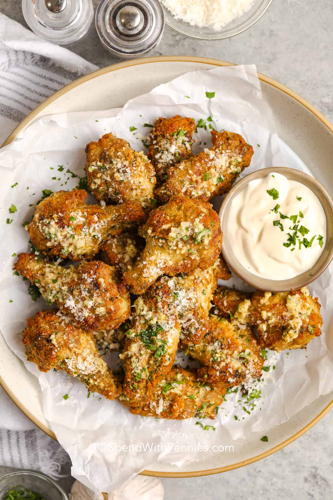

Garlic Chicken Parmesan
Description:
Garlic Parmesan Chicken Wings is a good chicken dinner idea for people on the go. After long hours of work, you deserve a break while enjoying a hearty dinner. The good news is, you can do both with this quick and easy recipe.
Ingredients:
- 8 to 12 pieces chicken wings
- 1/2 teaspoon dried oregano
- 1 teaspoon garlic powder
- 1/2 teaspoon ground cumin
- 1 1/2 teaspoon salt
- 3 tablespoons extra-virgin olive oil
- 4 cup parmesan cheese (grated)
- 1/2 teaspoon seasoning salt
- 1 tablespoon fresh basil (minced)
Steps:
- Season chicken with salt, cumin, and oregano. Let stand for 30 minutes.
- Combine olive oil, garlic powder, seasoning salt, basil, and parmesan cheese. Set Aside.
- Preheat oven to 400 degrees Fahrenheit.
- Bake the chicken wings for 25 to 30 minutes.
- Allow the chicken wings to cool then toss in the olive oil, garlic powder, salt, basil, and parmesan cheese mixture.
- Serve with your favorite dipping sauce.